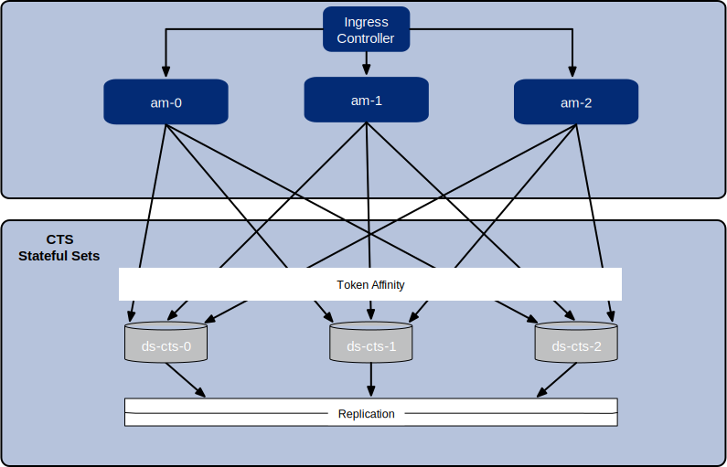
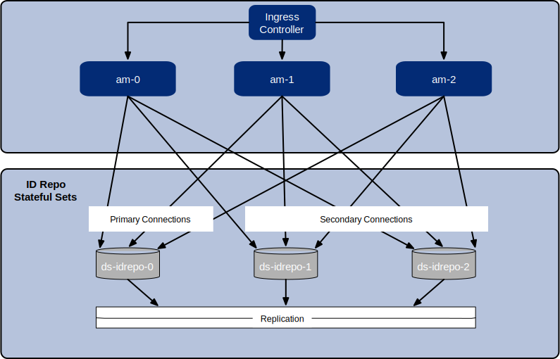

CDM Architecture
Once you deploy the CDM, the ForgeRock Identity Platform is fully operational within
a Kubernetes cluster. forgeops artifacts provide well-tuned JVM settings,
memory, CPU limits, and other CDM configurations.
Here are some of the characteristics of the CDM:
- Multi-zone Kubernetes cluster
-
ForgeRock Identity Platform is deployed in a Kubernetes cluster.
For high availability, CDM clusters are distributed across three zones.
For better node sizing, pods in CDM clusters are organized in two node pools.
Go here for a diagram that shows the organization of pods in zones and node pools in a CDM cluster.
- Cluster sizes
-
Before deploying the CDM, you specify one of three cluster sizes:
-
A small cluster with capacity to handle 1,000,000 test users
-
A medium cluster with capacity to handle 10,000,000 test users
-
A large cluster with capacity to handle 100,000,000 test users
-
- Third-party deployment and monitoring tools
-
-
NGINX Ingress Controller for Kubernetes ingress support.
-
Prometheus for monitoring and notifications.
-
Prometheus Alertmanager for setting and managing alerts.
-
Grafana for metrics visualization.
-
Certificate Manager for obtaining and installing security certificates.
-
Helm for deploying Helm charts for the NGINX Ingress Controller, Prometheus, and Grafana.
-
- Ready-to-use ForgeRock Identity Platform components
-
-
Multiple DS instances are deployed for higher availability. Separate instances are deployed for Core Token Service (CTS) tokens and identities. The instances for identities also contain AM and IDM run-time data.
-
The AM configuration is file-based, stored at the path
/home/forgerock/openam/configinside the AM Docker container (and in the AM pods). -
Multiple AM instances are deployed for higher availability. The AM instances are configured to access the DS data stores.
-
Multiple IDM instances are deployed for higher availability. The IDM instances are configured to access the DS data stores.
-
- Highly available, distributed deployment
-
Deployment across the three zones ensures that the ingress controller and all ForgeRock Identity Platform components are highly available.
Distribution across the two node pools—primary and DS—groups like pods together, enabling appropriate node sizing.
The following diagram shows how pods are organized in node pools and zones on CDM clusters:
- Load balancing
-
The NGINX Ingress Controller provides load balancing services for CDM deployments. Ingress controller pods run in the
nginxnamespace. Implementation varies by cloud provider. - Secret generation and management
-
ForgeRock’s open source Secret Agent operator generates Kubernetes secrets for ForgeRock Identity Platform deployments. It also integrates with Google Cloud Secret Manager, AWS Secrets Manager, and Azure Key Vault, providing cloud backup and retrieval for secrets.
- Secured communication
-
The ingress controller is SSL-enabled. SSL is terminated at the ingress controller. Incoming requests and outgoing responses are encrypted. For more information, see Secure HTTP.
- Stateful Sets
-
The CDM uses Kubernetes stateful sets to manage the DS pods. Stateful sets protect against data loss if Kubernetes client containers fail.
The CTS data stores are configured for affinity load balancing for optimal performance:
The AM policies, application data, and identities reside in the
idrepodirectory service. The deployment uses a singleidrepomaster that can fail over to one or more secondary directory services: - Authentication
-
IDM is configured to use AM for authentication.
- DS replication
-
All DS instances are configured for full replication of identities and session tokens.
- Backup and restore
-
The CDM is ready to back up directory data, but backups are not scheduled by default. To schedule backups, see Backup and Restore.
You can enable the automatic restore capability in CDM to create new DS instances with data from the backup of another CDM deployment with the same DS topology.
- Initial data loading jobs
-
When it starts up, the CDM runs two jobs to load data into the environment:
-
The
amsterjob loads application data, such as OAuth 2.0 client definitions, to theidrepoDS instance. -
The
ldif-importerjob primes the DSidrepoinstance, which acts as the AM application and policy store, with required schema.
-